ARP欺骗实验
实验目的
1、 通过ARP欺骗技术获取网站用户名、密码等信息。
2、 了解ARP欺骗的基本原理。
3、 熟悉ARP欺骗的工具使用，以及实验完成过程。
实验要求
1、 认真阅读和掌握本实验相关的知识点。
2、 上机实现软件的基本操作。
3、 得到实验结果，并加以分析生成实验报告。
注：因为实验所选取的软件版本不同，学生要有举一反三的能力，通过对该软件的使用能掌握运行其他版本或类似软件的方法。
实验步骤
1、安装使用工具Cain
首先在局域网内某台机器上安装Cain（IP地址为192.168.1.12）。Cain是一个功能强大的软件，可以实现网络嗅探、网络欺骗、破解加密口令、分析路由协议等功能。使用它之前必须进行安装，安装过程只需要按照默认情况安装即可。双击 ，运行Cain的操作界面如下：
，运行Cain的操作界面如下：
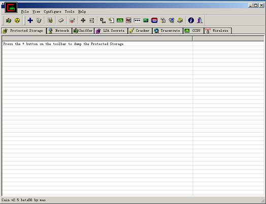
说明：由于cain功能很多，此处仅对本实验中所用到的功能进行讲解，其余功能读者可以自己去了解、尝试。
2、绑定网卡
在IP地址为192.168.1.12的机器上运行cain，在cain运行界面上，按下“sniffer”图标，并点击“configuration菜单”，在“sniffer”选项卡下，选择恰当的网卡进行绑定，点击确定。如下图

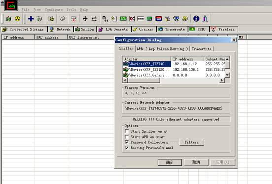
说明：在一台物理机上，有时因为配置虚拟机或多个网卡的情况下，会有多个网卡和对应的IP，网卡的选择根据所要嗅探的IP地址的范围决定。若需要探测的是192.168.136.7的机器，则应该选择第二个网卡，进行绑定。
在filters按钮下可以选择嗅探的协议类型。如图

在configuration中的ARP标签中，可以设置是用本机真实IP和MAC地址参与还是使用伪装IP和MAC地址。若选用使用伪装IP和MAC地址，可以在此处填写上设定的IP地址及MAC地址，这样，在之后的欺骗中即或发现了可疑也无法追述到真实主机。如图所示
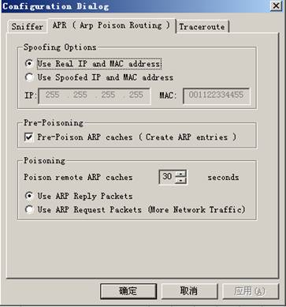
3、确定嗅探区域
选定sniffer标签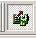，点击cain图标中的“ ”，可以对主机所在的整个网络或指定网络进行嗅探。本实验选择对指定IP范围进行嗅探，选择“Range”，输入需要嗅探的IP范围。点击“OK”。主界面将出现在指定区域内扫描到得主机IP、MAC地址等信息。如图
”，可以对主机所在的整个网络或指定网络进行嗅探。本实验选择对指定IP范围进行嗅探，选择“Range”，输入需要嗅探的IP范围。点击“OK”。主界面将出现在指定区域内扫描到得主机IP、MAC地址等信息。如图
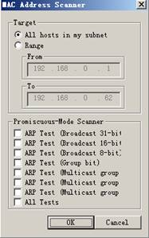 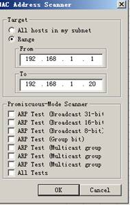
说明：若没有选择图标，则当点击 时，会提示“sniffer
not be actived”，此时点击，开始嗅探，实验仍可继续进行。从cain主界面中可以看到，已探测出在该区域段的机器（10.11为主机，13为虚拟主机，1为网关）。
时，会提示“sniffer
not be actived”，此时点击，开始嗅探，实验仍可继续进行。从cain主界面中可以看到，已探测出在该区域段的机器（10.11为主机，13为虚拟主机，1为网关）。

4、ARP欺骗
 选择cain主界面下端的APR标签
选择cain主界面下端的APR标签 ，点击“
，点击“ ”号，在选项框中选择进行ARP欺骗的地址。左边选择被欺骗的主机，再在右边选择合适的主机（或网关），ARP能够在左边列表中被选的主机和所有在右边选中的主机之间双向劫持IP包。在该实验中首先在左侧列表中选择192.168.1.13的地址，然后右侧列表即会出现其他IP地址，若在右侧选择网关192.168.1.1，这样就可以截获所有从13发出到广域网的数据包信息。点击“OK”，在cain界面上可以看到形成的欺骗列表，此时在状态一栏中显示“idle”，开始欺骗点击工具栏上的“”状态变为“poisoning”，开始捕获。此时，在192.168.1.13机器上进行网络操作，在12机器上会看到cain界面上显示捕获数据包的增加。
”号，在选项框中选择进行ARP欺骗的地址。左边选择被欺骗的主机，再在右边选择合适的主机（或网关），ARP能够在左边列表中被选的主机和所有在右边选中的主机之间双向劫持IP包。在该实验中首先在左侧列表中选择192.168.1.13的地址，然后右侧列表即会出现其他IP地址，若在右侧选择网关192.168.1.1，这样就可以截获所有从13发出到广域网的数据包信息。点击“OK”，在cain界面上可以看到形成的欺骗列表，此时在状态一栏中显示“idle”，开始欺骗点击工具栏上的“”状态变为“poisoning”，开始捕获。此时，在192.168.1.13机器上进行网络操作，在12机器上会看到cain界面上显示捕获数据包的增加。
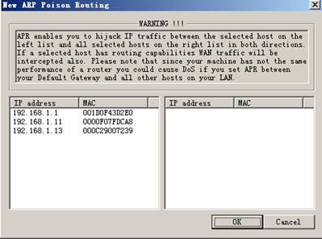
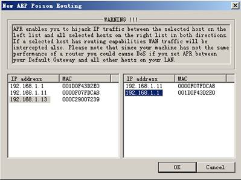
说明：根据版本不同，有的版本在右侧可以选择一个或多个IP地址进行嗅探。
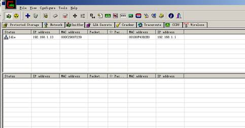
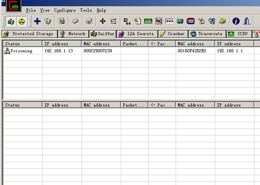
192.168.1.13开始访问网络后
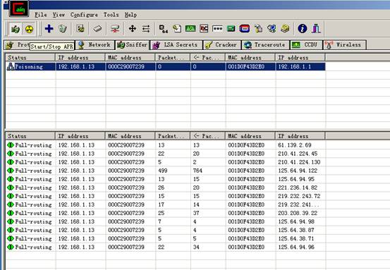
5、查看结果：
在该试验中我们的目的是通过欺骗，实现捕获用户名密码的目的，在整个欺骗结束后，在cain状态栏的“password”标签，这里放置捕获的所有用户名、密码信息。
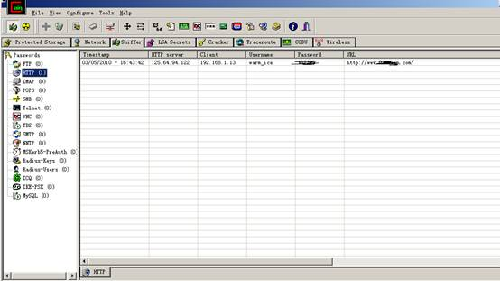
说明：图中右边列表中包括了所捕获的用户名密码按不同协议的分类情况，可以很清楚地看到IP为13的机器访问的某网络的用户名和密码（HTTP协议下）。
若是要嗅探在局域网内的某个web服务器的用户名密码，将ARP欺骗列表进行下修改。如图
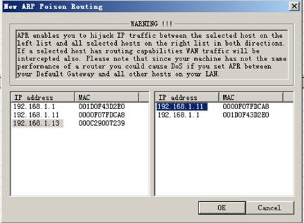

说明：可以看到数据包在增加。而下端路由处没有显示（因为没有通过路由连出外网）
若此时IP为13的机器登陆到IP为11的机器的某个论坛上，结果如下：
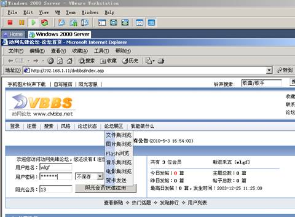
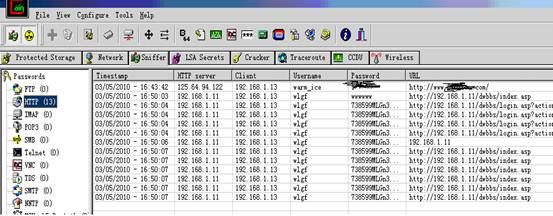
说明：从显示中可以看到用户名密码，以及访问涉及的页面，cookie等情况。
实验总结
ARP是一种将IP转化成以IP对应的网卡的物理地址的一种协议，或者说ARP协议是一种将IP地址转化成MAC地址的一种协议。它靠维持在内存中保存的一张表来使IP得以在网络上被目标机器应答。ARP欺骗只是ARP攻击中的一种，它的形式也有很多，在实际应用中，要防范ARP欺骗建议用户采用双向绑定的方法解决并且防止ARP欺骗，局域网（包括机房）的电脑（或者服务器）上面绑定网管的网卡MAC，网关也同样绑定你这台电脑的静态MAC。或使用ARP防火墙（如360推出的ARP防火墙）来阻止ARP欺骗。